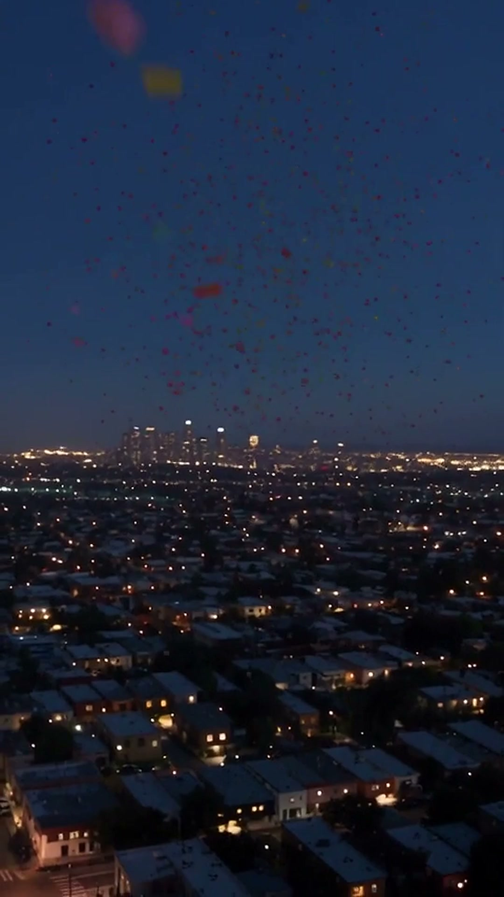

пов: пʼятниця,а ти знову вдома
а місто вжещось придумало
сотні подійщомісяця
усі — наодній мапі
які плани на вихідні? 👇
Поряд
Афіша міста на одній мапі
безкоштовно
Apple, логотип Apple і App Store є торговельними марками Apple Inc.
Google Play і логотип Google Play є торговельними марками Google LLC.